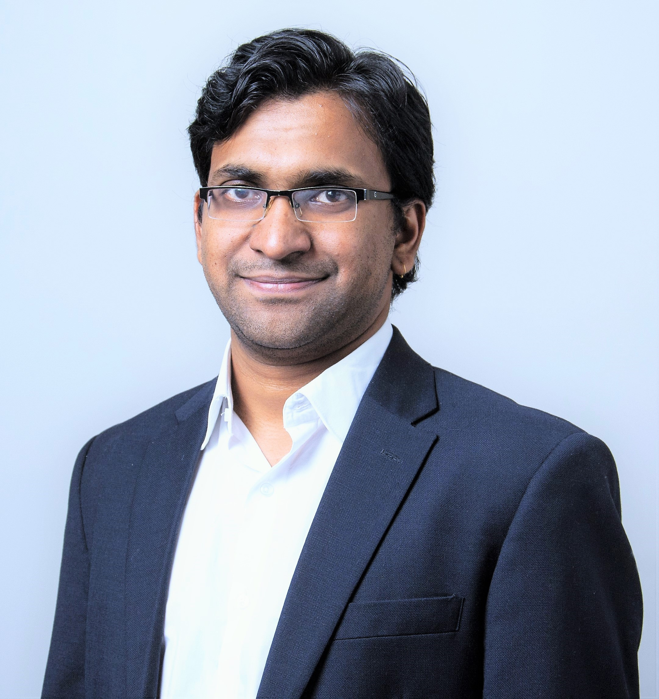

Parasara Sridhar Duggirala (పరాశర శ్రీధర్ దుగ్గిరాల)
About Me [CV] [Google Scholar] [DBLP]

| @ psd <at> cs.unc.edu |
| @ parasara.duggirala <at> gmail.com |
| 📞 919-590-6116 |
| ⌂ 201 S. Columbia St. Room FB 312. Chapel Hill, NC. 27599-3175. |
I am an Assistant Professor at University of North Carolina at Chapel Hill in the Department of Computer Science. Previously, I was at University of Connecticut in the Department of Computer Science and Engineering. My research is at the intersection of Cyber-Physical Systems, Formal Methods, Autonomy, Embedded and Real-Time Systems, and Control Theory.
I am recruiting motivated graduate and undergraduate students to join my research group. Send me an e-mail with your CV if you are interested.
My most recent area of research is ensuring safety for autonomous systems. Autonomous systems are expected to provide optimal performance in a wide range of environments. Ensuring safety and optimality of autonomous systems would not only require reasoning about systems that evolve in continuous state-space, but also have software and machine learning components. In our lab, we not only work on the theoretical foundations for developing such algorithms, but also apply these algorithms on various case studies. I am interested in combining numerical, probabilistic, and symbolic methods for reasoning about autonomous systems. If you are interested in my work, check out my projects and publications.
Updates
- [October 2023] Shengjie Xu will be presenting joint work titled Statistical Approach to Efficient and Deterministic Schedule Synthesis for Cyber-Physical Systems at ATVA 2023.
- [October 2023] Extended version of the RTCSA conference paper on Statistical Verification of Autonomous System Controllers Under Timing Uncertainties got accepted into Real-Time Systems Journal.
- [September 2022] Glad to be a part of new NSF POSE Grant together with UC Berkeley, UC Santa Cruz, and University of Michigan.
- [July 2023] I will be part of the ICCPS 2024 program committee and organizing committee.
- [July 2023] Joint work with Shengjie Xu, Bineet Ghosh, Clara Hobbs, Enrico Fraccaroli, and Samarjit Chakraborty titled Statistical Approach to Efficient and Deterministic Schedule Synthesis for Cyber-Physical Systems got accepted to ATVA 2023.
- [June 2023] Bineet Ghosh successfully defends his thesis. Congratulations, Bineet! Bineet will be joining University of Alabama as a Tenure-Track Assistant Professor.
- [March 2023] Received a Grant from AFOSR on *Neurosymbolic Techniques for Testing of Autonomous Systems* for a sum of $450,000.
- [October 2022] Bineet Ghosh receives Best Presentation Award at ACM SIGBED Student Research Competition (SRC). Congratulations, Bineet!
- [October 2022] My student Manish Goyal is present our paper titled NExG: Provable and Guided State Space Exploration of Neural Network Control Systems using Sensitivity Approximation at EMSOFT 2023.
- [October 2022] Clara Hobbs will be presenting the work titled Statistical Hypothesis Testing of Controller Implementations Under Timing Uncertainties at EMSOFT 2023.
- [August 2022] I will be visiting Wright Brothers Institute in Dayton, OH for teaching a mini course on Program Verification.
- [August 2022] Bineet Ghosh is now officially a PhD Candidate after successfully completing the thesis proposal. He is on the job market the coming year.
- [August 2022] My student Bineet Ghosh is presenting our paper title Statistical Hypothesis Testing of Controller Implementations Under Timing Uncertainties that has been nominated for best paper award at RTCSA 2022.
- [July 2022] I will be a part of the program committee of IEEE Real-Time and Embedded Technology and Applications Symposium (RTAS) 2023.
- [July 2022] I will be teaching a short course titled Introduction to Program Verification at Wright-Brothers Institute at Dayton.
- [July 2022] Joint paper with my student Manish Goyal and Miheer Dewaskar titled NExG: Provable and Guided State Space Exploration of Neural Network Control Systems using Sensitivity Approximation has been accepted for publication at EMSOFT 2022.
- [July 2022] Joint work with Clara Hobbs, Bineet Ghosh, Shengjie Xu, and Samarjit Chakraborty titled Safety Analysis of Embedded Controllers under Implementation Platform Timing Uncertainties has been accepted for publication at EMSOFT 2022.
- [June 2022] Manish Goyal successfully defends his thesis. Congratulations, Manish!
- [June 2022] Joint work with my student Bineet Ghosh, Clara Hobbs, Shengjie Xu, James Anderson, P. S. Thiagarajan, and Samarjit Chakraborty titled Statistical Hypothesis Testing of Controller Implementations Under Timing Uncertainties has been accepted for publication at RTCSA 2022.
- [May 2022] Received a Grant from AFRL on *Introduction to Program Verification* for teaching a mini course on Program Verification at Wright Brothers' Institute in Dayton, OH.
- [May 2022] UNC Team places 2nd in GRAIC autonomous vehicle racing competition. Congratulations to Han Gao for handling all the competition logistics and to Abel Karimi for mentoring him.
- [May 2022] My student Abel Karimi is presenting our paper on Automatic Generation of Test-cases of Increasing Complexity for Autonomous Vehicles at Intersections at ICCPS 2022 part of CPS Week.
- [May 2022] Sanaz Sheikhi is presenting our joint work with Edward Kim and Stanley Bak titled Coverage-Guided Fuzz Testing for Cyber-Physical Systems at ICCPS 2022 part of CPS Week.
- [January 2022] Joint work with my student Abel Karimi titled Automatic Generation of Test-cases of Increasing Complexity for Autonomous Vehicles at Intersections has been accepted for publication at ICCPS 2022 part of CPS Week.
Previously
I was at University of Illinois at Urbana Champaign for my graduate studies. My PhD thesis was supervised by Prof. Mahesh Viswanathan and Prof. Sayan Mitra. I obtained my B.Tech from Indian Institute of Technology Guwahati. I was an intern at SRI International in the Computer Science Laboratory in Summer 2012 and at NEC Labs America in the System Analysis and Verification Group in Summer 2011, and at Verimag in the Timed and Hybrid Systems Group under the supervision of Dr. Oded Maler in Summer 2008.